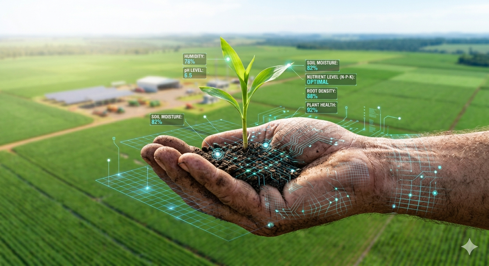

O agro é forte e o futuro é sustentável
Como a tecnologia e a inteligência artificial estão salvando o planeta e otimizando a produção de alimentos.

O desafio da nossa geração
Até 2050, seremos quase 10 bilhões de pessoas no mundo. Como alimentar todo mundo sem destruir nossas florestas e esgotar a água? A resposta não é plantar mais terra, é **plantar de forma mais inteligente**..

Eco Crop
Criamos um ecossistema digital que conecta sensores IoT (Internet das Coisas) instalados no solo diretamente ao celular do produtor.
-
Água na medida certa
O sistema avisa o momento exato de irrigar, economizando até 40% de água.
-
IA de proteção
Algoritmos identificam pragas por fotos antes que elas se espalhem, reduzindo o uso de defensivos químicos.
-
Carbono zero
Monitoramento que ajuda a manter o solo saudável para absorver mais CO₂ da atmosfera.